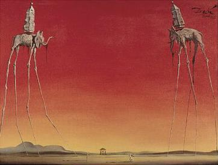

O Surrealismo foi um movimento artístico que buscava representar o mundo dos sonhos, da imaginação e do inconsciente. As obras surrealistas misturam realidade com elementos estranhos e inesperados, criando imagens criativas e muitas vezes misteriosas.
The Persistence of Memory
Salvador Dalí
Uma das obras mais famosas do surrealismo, apresenta relógios derretendo em uma paisagem estranha. Ela simboliza a passagem do tempo de forma diferente e imaginativa.

The Elephants
Salvador Dalí
Nesta obra, elefantes com pernas extremamente longas caminham em um cenário surreal, criando uma sensação de sonho e fantasia.